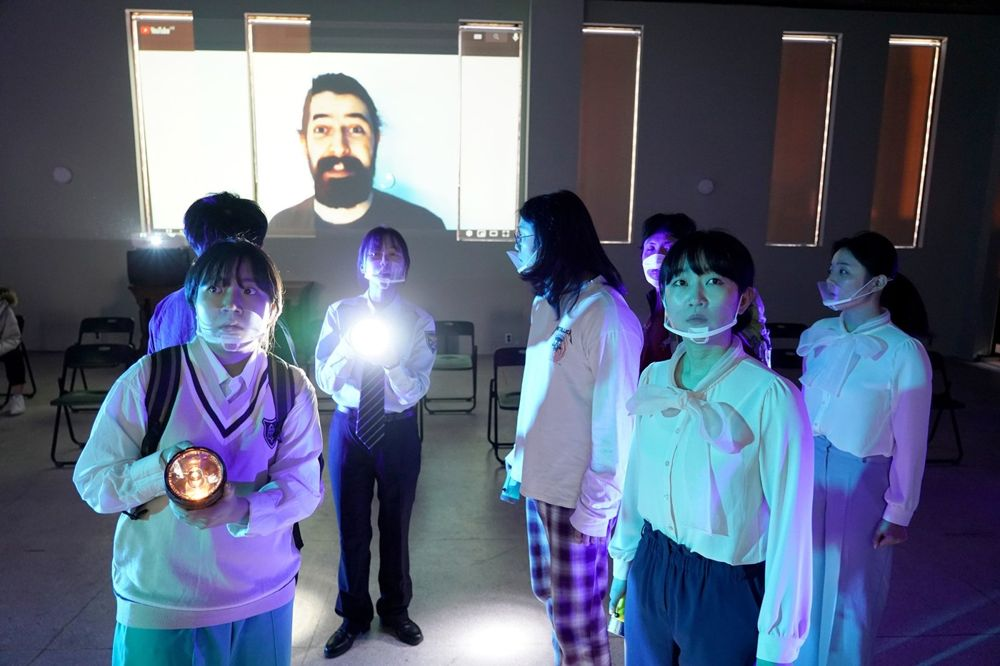

그린피그 > 아카이브 > CAVE-2021 Seoul Version

페이크 뉴스가 만들어지고 퍼져 나가는 과정과 그로 인한 현상을 다룬다. 코로나19 시기 전염병처럼 번진 잘못된 정보들, 혐오와 차별을 확대 재생산하는 소문들, 증권가 찌라시와 메신저 속 이야기들. 페이크 뉴스가 난무하는 세상에서 우리는 무엇을 믿고 어떻게 살아가야 하는지 묻는다. 페이크 뉴스 리서치 프로젝트의 두 번째 작업.
2021.2.8–10 / TINC(This is not a church)
작: 공동창작
구성: 박현지, Callie Nestleroth, Dennis Yueh-Yeh Li, John-Philip Faienza, James Harvey Estrada, Sharifah Aleysha Al-yahya
조연출: 정유진
출연: 김원태, 박수빈, 이승훈, 이주형, 이지원, 조은원, 최지현, Ali Alasri, James Eley, Luke Van Meveren, Shan Y Chuang
프로듀서: 임현진
영상: 윤민철
조명: 김소현
조명 오퍼레이터: 이민정
그래픽디자인: 김영선
제작: 그린피그
주최: 한국문화예술위원회
주관: 한국예술창작아카데미
2021 리뷰, 이경미 (네이버 블로그)
이전: @GODBLOG | 다음: 목선
아카이브로 돌아가기 | 아무 작품이나
발행일 2026.11.13